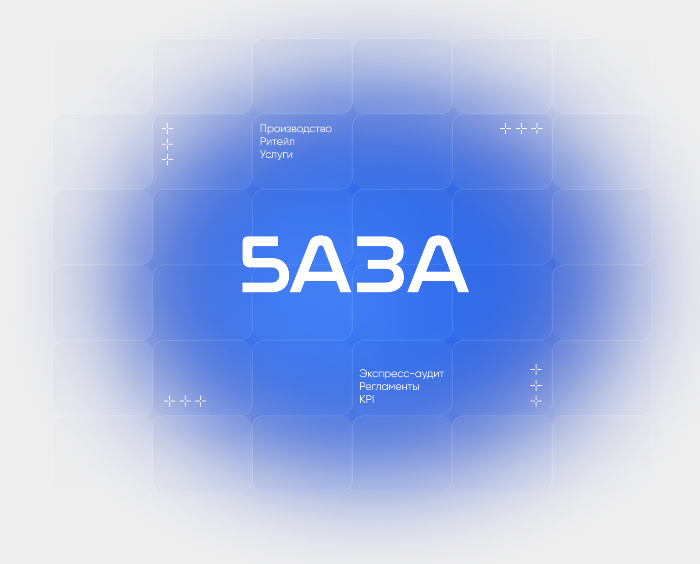

Вопросы забирают время
Команда регулярно обращается к руководителю по базовым задачам. Вместо управления бизнесом приходится снова и снова объяснять очевидные действия.
Опишем процессы, напишем регламенты и внедрим KPI — и вы перестанете быть узким горлышком: команда работает по чётким правилам, а не по звонку вам.

1500+
Регламентов внедрено
11+
Лет в систематизации в управлении и построении бизнес-процессов
84%
Клиентов возвращаются для реализации новых проектов
10 млрд
Суммарная выручка наших клиентов
Клиники, салоны, сервисные и консалтинговые компании: стандарты обслуживания, адаптация администраторов, регламенты работы с клиентами.
Мебель, пищевое и лёгкое производство: процессы смен, контроль качества, адаптация новичков и чек-листы на каждом участке.
Интернет-магазины и маркетплейсы: маршрут заказа, регламенты контента, связка закупки и продаж в единую систему.
Зоны ответственности прораба, снабжения и подрядчиков, контроль сроков и стандарты коммуникации на объектах.
Стандарты первых звонков, адаптация менеджеров, KPI и прозрачная воронка — продажи перестают зависеть от «звёзд».
Подготовка компании к росту: оргструктура, процессы и база знаний, которые тиражируются на новые точки и команды.
Регламенты диспетчеров, стандарты приёма заявок и коммуникации с водителями, клиентами и складом.
Если хотя бы 2–3 пункта — про вас, бизнес держится на ручном управлении и теряет в скорости, деньгах и людях.
Команда регулярно обращается к руководителю по базовым задачам. Вместо управления бизнесом приходится снова и снова объяснять очевидные действия.
Сотрудники не понимают, где заканчивается их зона ответственности. Задачи теряются, контроль растёт, а руководителю приходится постоянно вмешиваться.
Новые сотрудники медленно разбираются в процессах, часто ошибаются и долго выходят на результат.
Сотрудники делают минимум и не видят связи между результатом и доходом. Вовлечённость падает, а эффективность приходится вытягивать вручную.
В компании нет единых правил и стандартов. Одни и те же задачи выполняются по‑разному, из-за чего появляются ошибки, споры и нестабильный результат.
Вы передаёте задачи, но результат получается не таким, как нужно. Без инструкций и регламентов сотрудники выполняют работу по своему пониманию.
«Без меня бизнес останавливается»
Соберём процессы так, чтобы компания работала без вашего ручного контроля.
«KPI есть, но их не понимают и не выполняют»
Построим систему, которая работает без ручного управления каждым сотрудником.
«Я — диспетчер между отделами»
Опишем и внедрим процессы с метриками до и после — работа идёт без вас в ручном режиме.
Разрабатываем управленческие инструменты, которые делают компанию управляемой и масштабируемой.
Комплексный проект по выстраиванию системы управления компанией: от формирования фундамента до внедрения рабочих инструментов.
от 35 000 ₽
Разрабатываем локальный бизнес-процесс для конкретного этапа компании с чётким закреплением шагов, ответственных и результата. Это устраняет разночтения, снижает ошибки и формирует единый стандарт выполнения задач.
от 45 000 ₽
Создаём регламенты и инструкции, которые закрепляют единый порядок выполнения задач и правила взаимодействия сотрудников. Это снижает ошибки и упрощает обучение новых сотрудников.
от 8 000 ₽
Анализируем текущее состояние, находим узкие места и составляем дорожную карту
Разбираем текущую работу компании: процессы, роли, документы, зоны ответственности и проблемы, из-за которых бизнес теряет управляемость.
Описываем процессы, разрабатываем KPI, регламенты и оргструктуру под вашу компанию
Вы получаете не рекомендации «на словах», а готовые рабочие инструменты: регламенты, инструкции, KPI, зоны ответственности, шаблоны и базу знаний для команды.
Не отдаём папку с регламентами «на полку» — доводим до того, чтобы команда реально работала по системе.
Не растягиваем на месяцы теории — быстро показываем работающий результат на конкретном участке.
Описали процессы в 40+ нишах. Не шаблоны «для всех», а решения под специфику вашего бизнеса.
Снимаем сопротивление команды и обучаем работать по-новому — иначе система не приживётся.
С вами работает эксперт с многолетним опытом, а не безликое агентство. Оплата поэтапная — за результат каждого этапа.
Покажем, где теряются деньги и контроль, и что делать в первую очередь — без обязательств.
За 30–40 минут покажем слабые места в процессах, распределении задач и управлении командой
Получить бесплатный разбор БРазберём вашу ситуацию и ответим на вопросы по процессам, сотрудникам и управлению
Получить консультацию БПроводится бесплатная консультация, где анализируем вашу ситуацию и формируем план действий. Вы получаете рекомендации и сами принимаете решение — внедрять самостоятельно или работать вместе с нами.
Работаем поэтапно: диагностика, сбор информации, проектирование системы и передача готовых инструментов. На каждом этапе согласовываем результат с вами и сопровождаем внедрение до рабочего состояния.
Да. Все инструменты разрабатываются под вашу компанию: учитываем специфику отрасли, размер команды и текущие процессы. Готовых шаблонов «для всех» не используем.
Созвоны и переписка в удобном для вас формате: Telegram, почта или видеовстречи. Все договорённости и материалы фиксируются письменно.
Заключаем договор с фиксированным объёмом работ, сроками и результатом. Оплата поэтапная — вы платите за конкретный результат каждого этапа.
Да, применяем ИИ-инструменты там, где они ускоряют работу: анализ документов, подготовка черновиков регламентов, структурирование информации. Финальные решения всегда принимает эксперт.